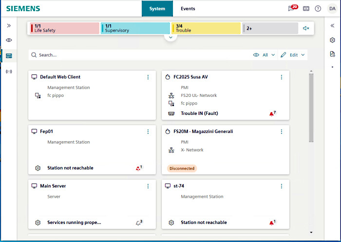
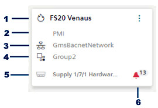
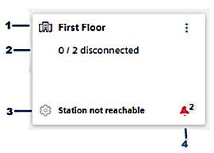

Device View
It shows the devices of a building as a grid of tiles, allowing you to easily monitor and perform actions on them. Two types of tiles can be displayed:
- device tile, represents a single device
- group tile, provides an aggregate view of multiple devices

Access Device View
- In the top navigation bar select System.
- In the left sidebar select Devices.
- The tiles representing the devices are displayed in a single-pane layout.
To exit the Device View, make a different selection in the left sidebar. For example, Hierarchies.
Device Tiles and Group Tiles
You can switch between showing devices individually or grouped using the All / Groups menu on the top-right:
- All: Shows all the device tiles individually. Group tiles are not shown.
- Groups: Shows group tiles. Individual device tiles are shown only for ungrouped devices.
Device Tile | Group Tile |
|---|---|
 |  |
1 - discipline icon and device name or description (depends on Text representation in Layout settings) | 1 - group icon and group name |
2 - device type | 2 - number of disconnected devices / total devices in group |
3 - network, if any |
|
4 - group to which this device belongs, if any. |
|
5 - most important event for this device (event icon and event source or event cause) | 3 - most important event for this group (event icon and event source or event cause) |
6 - bell icon with counter, summarizes the events of this device | 5 - bell icon with counter, summarizes the events of all devices in the group |
* The bell icon and most important event are visible only if the device or group has pending events. The network is shown only for devices that are under a network, and similarly the group shown only for devices that are members of a group.
Handle Device Events
When a device or group has pending events, a bell icon is visible on the tile and indicates the total number of events.
- On the device tile or group tile, select the bell icon .
- A dialog opens, showing the events in question.
- You can handle the events directly from this dialog box: Select an event to access its commands (Acknowledge, Reset, etc.).
- Alternatively, select Go to events to view and handle the events in the full Event List.
Access Properties and Commands of a Device
You can quickly access the properties and commands of a device from its tile.
- In Device View, do one of the following:
- Select a device tile.
- On a device tile, select and select Show properties.
- The Properties in the right sidebar update to show the properties and commands of that device.
(The system browser selection remains unaffected)
Navigate to a Device
You can jump from a device tile to the selection of that device in Tree View.
- On a device tile, select and select Show in hierarchies.
- The Flex client switches to Hierarchies, with that device automatically selected in System Browser.
- To return to Device View, select the icon in the left sidebar again.
View only the Devices in a Group
- Device View is set to show Groups.
- Do one of the following:
- Double-click the group tile.
- On the group tile, select , then select Show devices.
- The Device View shows the individual device tiles for the members of that group.
To return to the preceding view select Back to all groups.
Rename a Group
- Device View is set to show Groups.
- On the group tile you want to rename, select , then select Rename.
- Type in the new name for the group.
- Select Save.